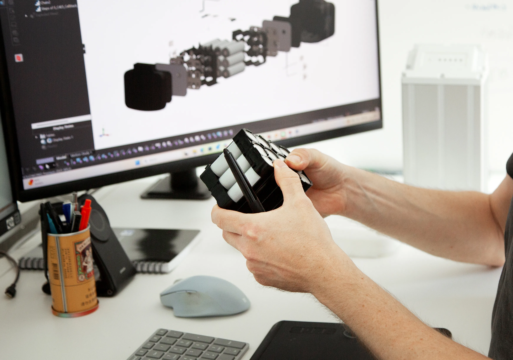
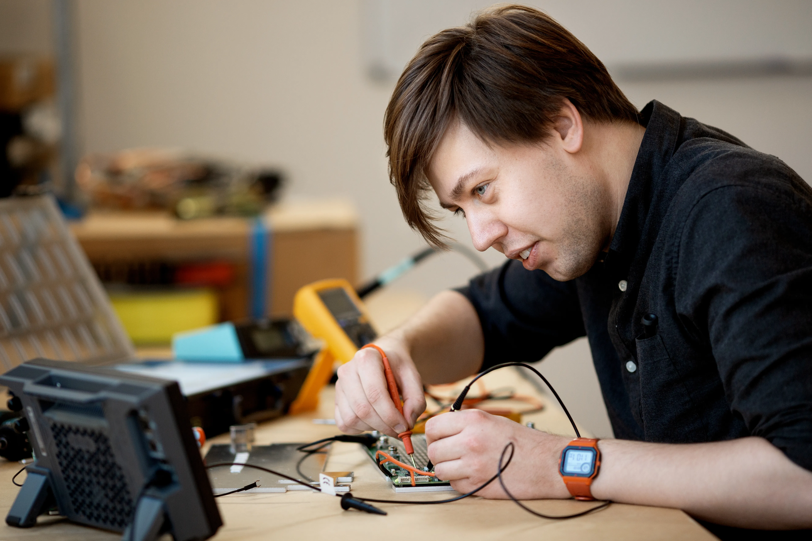
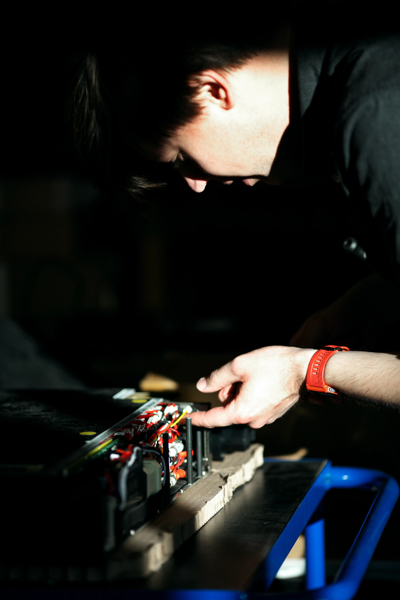
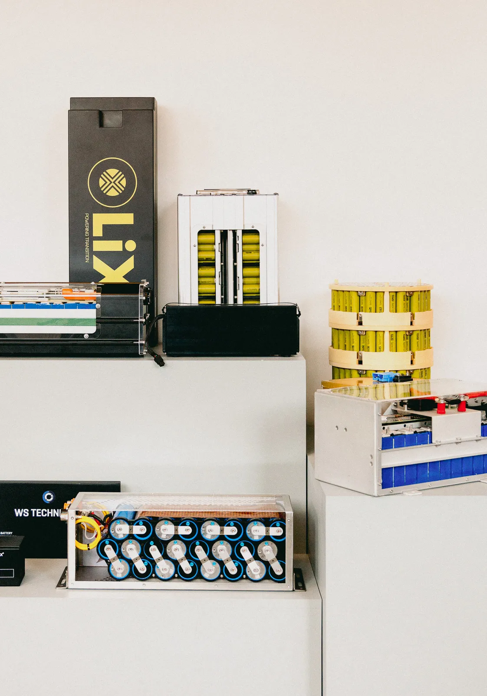
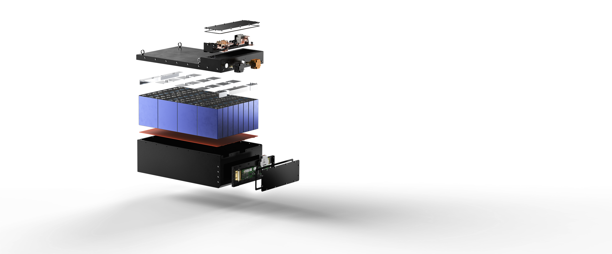

01 / Design
Design phase & feasibility study.
Every project starts with your operating profile and physical constraints. We assess feasibility, define the architecture and produce the first drawings and specification in 3D CAD.

We are a full-service custom battery manufacturer. We design lithium battery packs to your specification, with design, engineering and manufacturing competences under one roof.
Discuss your project
The process of making a new battery design always starts with a drawing and a specification. We work professionally with 3D CAD systems, so there is always a common reference and a shared understanding of the project at hand.
Every project starts with your operating profile and physical constraints. We assess feasibility, define the architecture and produce the first drawings and specification in 3D CAD.
A representative pack is built and tested electrically, thermally and mechanically against the agreed profile, before anything moves toward production tooling.

The validated design is translated into a repeatable manufacturing definition: approved components, controlled work instructions and end-of-line testing for every unit.

Every system is verified against the certification requirements of its target market, covering safety, EMC and transport regulations before it ships anywhere.

Once released, the design moves into standard operating procedure: consistent, traceable output at the volume your project needs.

Cell selection, BMS, thermal strategy and enclosure are developed as one architecture, not assembled from separate off-the-shelf parts.

Bring us the operating profile, physical constraints and integration requirements. We will help scope the right development path for your application.